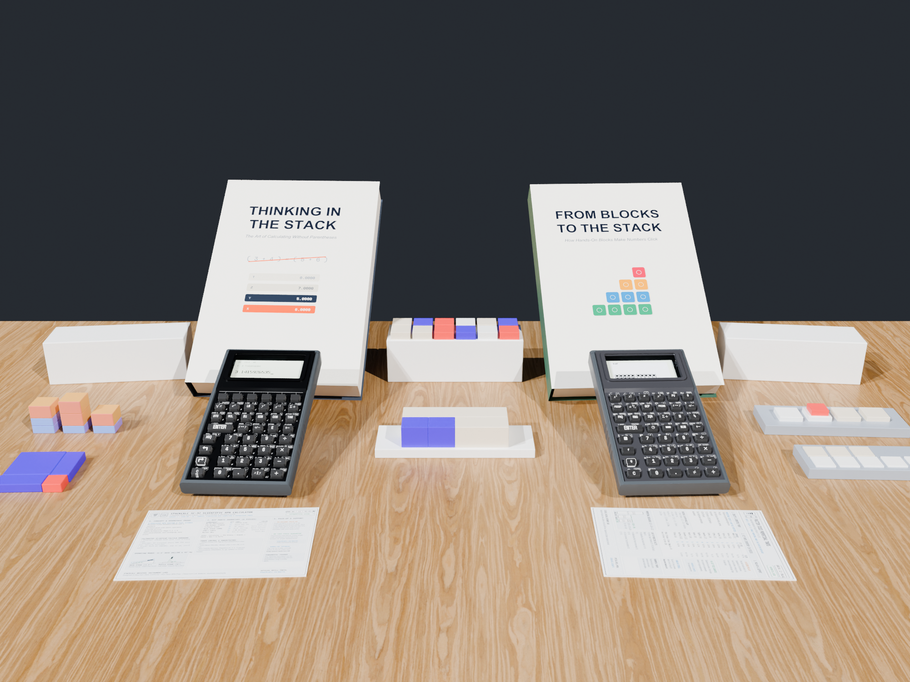

From OpenSCAD to the Classroom Desk: 84mm Fraction Towers, Logarithmic Prime Blocks, and Unit-Tested Books
Whenever we tell someone we are manufacturing a new calculator alongside 3D-printed math blocks and printed textbooks, the natural question is: "In a world with smartphones and AI, why does the world need another calculator?"
Because even in the age of AI, students still need to know how to think mathematically. Handing a child an AI chatbot—or a standard school calculator where they type nested parentheses (12 + 8) / (5 - 1) = into a black box—hides every intermediate step of reasoning. By contrast, on a stack-based RPN calculator, students learn operator-precedence parsing themselves because they must break expressions down in the right order of operations to enter them onto the stack, seeing every intermediate result step by step. And unlike CAS (Computer Algebra System) calculators—which are banned on the SAT, ACT, IB, UIL, and college math exams—our calculator is purposefully designed to be allowed in testing situations (zero CAS symbolic manipulation, zero QWERTY keyboard, and zero wireless radios on the hardware).
Our goal with the StackCalc Ecosystem is to make every step of mathematical reasoning visible and physical, connecting 3D-printed classroom manipulatives (manufactured in-house and on Slant3D), unit-test-verified reference books, and our SC-6 / SC-32 calculators.

1. What Our Fraction & Prime Number Blocks Actually Do
Every physical kit in the StackCalc Catalog is modeled in parametric OpenSCAD around the \(42\text{ mm}\) Gridfinity standard so the storage box lid turns into an active math stage on the student's desk. Rather than printing generic plastic shapes, each manipulative encodes a specific mathematical invariant that maps \(1:1\) to a key on the calculator:
A. Fraction Studio Proportional Towers (\(84\text{ mm}\) Integer Datum)
Standard plastic fraction bars often suffer from awkward decimal thicknesses that drift when stacked. We engineered our Fraction Studio Proportional Towers around an \(84\text{ mm}\) Whole (1/1) height datum—chosen because \(84\) is divisible by \(1, 2, 3, 4, 6, 7,\) and \(12\) into exact integer millimeters (\(42\text{ mm}, 28\text{ mm}, 21\text{ mm}, 14\text{ mm}, 12\text{ mm},\) and \(7\text{ mm}\)), eliminating slicer layer-rounding drift:
- On the Desk: To compute \(\frac{1}{2} + \frac{1}{3}\), a student drops the \(\frac{1}{2}\) tower (\(42\text{ mm}\)) and \(\frac{1}{3}\) tower (\(28\text{ mm}\)) into the left channel of the Twin Comparator Stage (reaching \(70\text{ mm}\)). In the right channel, they stack \(\frac{1}{6}\) blocks (\(14\text{ mm}\) each) until both columns stand flush at \(5 \times 14\text{ mm} = 70\text{ mm}\) (\(\frac{5}{6}\))—physically discovering why a common denominator is required.
- On the Calculator (
StackCalc 6): The student enters.1.2 [ENTER] .1.3 [+]to see5/6. And when reducing a fraction like \(\frac{12}{18}\) (.12.18), pressing[SIMP]inStackCalc 6factors out one prime divisor at a time (showing÷2\(\rightarrow \frac{6}{9}\), then÷3\(\rightarrow \frac{2}{3}\)) instead of jumping straight to the reduced answer like a black box.

B. Prime Factor Studio & Logarithmic Slide Rule Comparator
Factor trees on paper often feel like arbitrary symbol manipulation to 4th–6th graders. Our Prime Factor Studio turns prime factorization, Greatest Common Divisor (GCD), and Least Common Multiple (LCM) into a physical length-matching puzzle:
- On the Desk: Each prime block (\(2, 3, 5, 7\)) is scaled logarithmically (\(\text{Length} \propto \log(p)\)). Because \(\log(a) + \log(b) = \log(a \times b)\), snapping a
2block and a3block end-to-end inside the comparator trough physically equals the exact length of the6marker! When comparing \(12\) (\(2 \times 2 \times 3\)) and \(18\) (\(2 \times 3 \times 3\)) in parallel channels, students physically see the shared prime train (\(2 \times 3 = 6 = \text{GCD}\)) and the combined train needed to make both tracks equal length (\(2 \times 2 \times 3 \times 3 = 36 = \text{LCM}\)). - On the Calculator: Students verify their physical block trains using the dedicated
[PRIME],[GCD],[LCM], and[÷R](integer division with remainder) keys inStackCalc 6andStackCalc 32.
2. Hybrid Manufacturing (In-House + Slant3D) & 3D-Printed dummy_pcb Checks
To bring both the classroom blocks and the calculator enclosures to production simultaneously:
* In-House Precision: We print our multi-color silk fraction/prime towers, planetary clock gear trains, and 4-part screwless calculator enclosures on calibrated PEI plates. Using Hardware/generate_scad.py, we also export dummy_pcb.scad \(\rightarrow\) dummy_pcb.stl directly from KiCad's pcbnew API—allowing us to 3D-print an exact plastic replica of the populated PCB (including all 43 switches, the rear Pico 2 envelope, and the 0.5mm ZIF socket) to verify sliding rail clearances and TPU plunger reach before physical boards arrive.
* Slant3D Print Farm: We offload the heavy, single-material Gridfinity storage boxes, lids, and trays to Slant3D's automated print farm so our workshop printers stay focused on precision multi-color kits.
3. Compiling Books Like Firmware: A Unit-Tested Publishing Pipeline
Surrounding the hardware and blocks is our library of Official Manuals & Companion Workbooks—including the SC-32 Scientific Manual, SC-6 Elementary Manual, 339-Problem SC-32 Casebook, 253-Problem SC-6 Workbook, and 24 UIL Competition Exams.
To guarantee zero typos or stale screenshots, our build system (Makefile + Tools/book_engine.py) compiles the books just like firmware:
1. Executable Keystroke Macros: Every worked example in the chapters is extracted and executed against RPNCore in TextbookVerificationTests_SC32.swift and TextbookVerificationTests_SC6.swift. If any register state in the prose disagrees with the calculator engine, the build fails.
2. Automated Simulator Screenshots & STL Diagrams: Every LCD dot-matrix screenshot is exported directly from the SwiftUI test runner, and every manipulative diagram is rendered from the production OpenSCAD .stl meshes (blocks_registry.json).